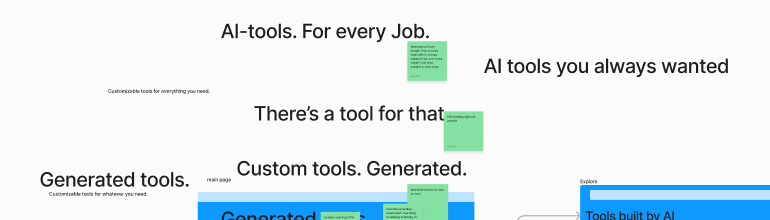

Agemo, what we built for them
They had
A machine that turns a sentence into working software.
“The tool seems powerful but it is lacking the integration into the user’s workflow.”their own summary of the user research, July 2024
They asked for
“Cleaning up onboarding” and “Cleaning up communication”, in six weeks.
Not in scope: “Product redesign”.the proposal, 31 July 2024
We found
“The recurring themes revolve around usability (“what can I do ?” and guidance (“what should I do?”).”the user research
“Today journey largely skips over middle, goes from ‘learn capabilities’ to ‘create’”the journey model
We built



Agemo built a machine that can make almost anything.
So nobody knew what to ask it for.
We built the way in: something to try, something to change, someone to ask, and eight bets to find out if we were right.